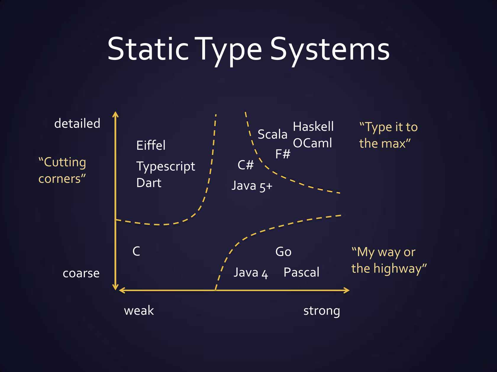
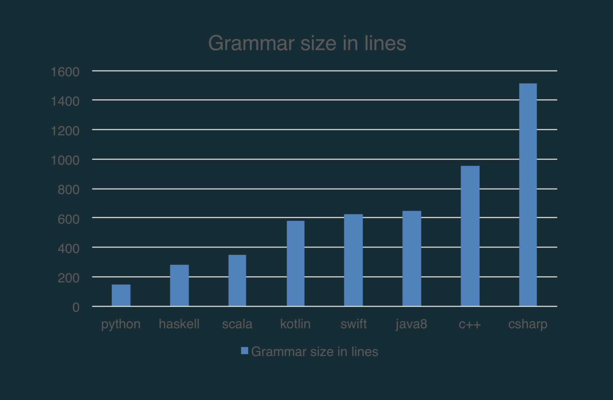
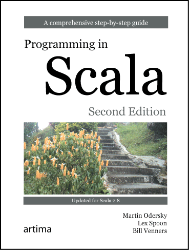
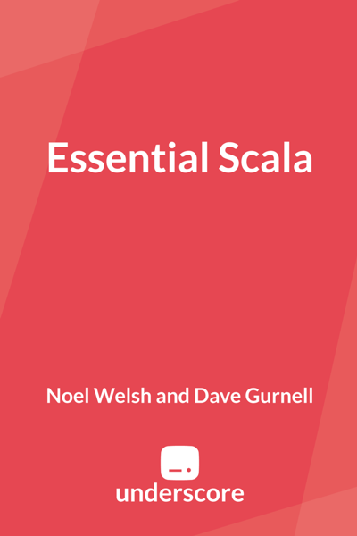
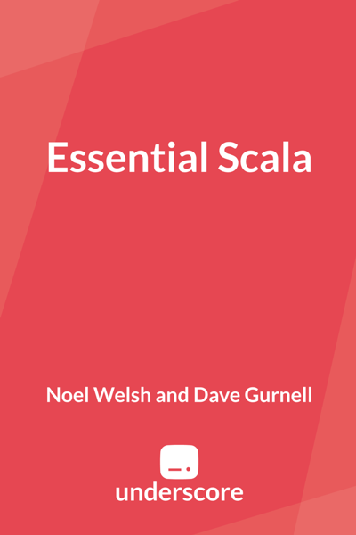

Функционално програмиране за напреднали със Scala
Давайте функционалнооооооо.….
Кратка история на ФП
- Началото
- Развитие на теория
- Практическо навлизане
Scala навсякъде
- Къде се ползва Scala? - Netflix, Amazon, Spotify, Twitter, Airbnb, etc
- Scala с отворен код? - Kafka, Samza, Spark, Akka, Play Framework
- Scala в България! - Ocado, Hopper & others
Кои сме ние?
Административни неща
Сбирки
Всяка сряда от 18:00 до 21:00 в зала 101
Оценяване
- два теста (около средата и в края на семестъра) – всеки по 25 точки
- проект – 50 точки
- (до) 4 задачки през семестъра – по 5 точки всяка
Оценяване - Скала (no-pun intended)
| Оценка | Точки |
| 6 | ≥ 85 |
| 5 | 70–85 |
| 4 | 55–70 |
| 3 | 40-55 |
| 2 | < 40 |
SCAlable LAnguage
- скалира с нуждата на потребителите на езика
- opinionated по подразбиране,
- но лесно позволява алтернативни конструкции/подходи според нуждата
Симбиоза на ФП и ООП
Детайлна типова система

Декларативност и композиция
Подходящ за DSL-и
Подходящ за DSL-и
Нови конструкции
Идеоматичен вариант в Scala
Нови конструкции
асинхронни изчисления:
val calculation = Future {
(1 until 10).sum
}
calculation.foreach(result => println("Result: " + result))
println("End of this thread")Изход:
Силна академична база
- но създаден за индустрията
- Композиращи се езикови елементи и малка граматика
Grammar Size

Силна академична база
- но създаден за индустрията
- Композиращи се езикови елементи и малка граматика
- Математическа база за Scala 3
Scala 3 и Dotty
- базиран върху DOT – математически модел за есенцията на Scala
- Бърз и опростен компилатор, с доста гъвкавост за развитие на езика и неговите инструменти
Екосистема и стабилна общност
Инсталиране
- JVM 8 или 11
- Win/OS X
- Ubuntu/Debian:
install openjdk-8-jdk - Fedora/Red Hat:
install java-1.8.0-openjdk
- Scala 2.12
- Win, Linux
- OS X:
brew install scala
- sbt
Read-eval-print loop (REPL)
- интерактивен езиков шел
- стартира се от командния ред със
scala
Hello World
Компилиране и изпълнение
$ scalac HelloWorld.scala
$ scala HelloWorld
Hello, World!sbt, Scala/Simple Build Tool
build.sbt:
sbt – Директорийна структура
build.sbtsrc/main/scala– основен кодsrc/test/scala- тестове
sbt команди
- sbt <команда> – изпълнява командата
- sbt – влиза в интерактивен режим
- compile – компилира кода
- run – изпълнява обект с
mainметод - console – стартира REPL, в който е достъпно всичко от кода
IDEs/текстови редактори
- IntelliJ IDEA (Community Edition) – ще ползваме основно него
- Scala IDE for Eclipse
- Ensime – IDE възможности за vim, Emacs, Sublime, Atom, VSC
Демо с IntelliJ IDEA
Тестове
Ресурси – книги
  
